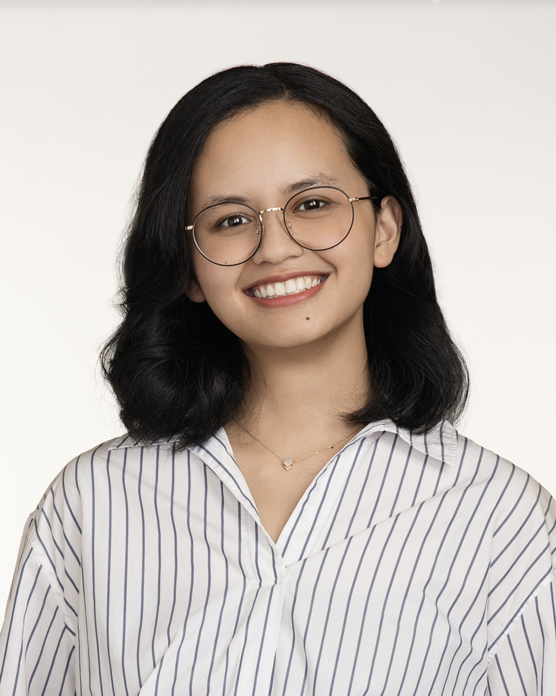
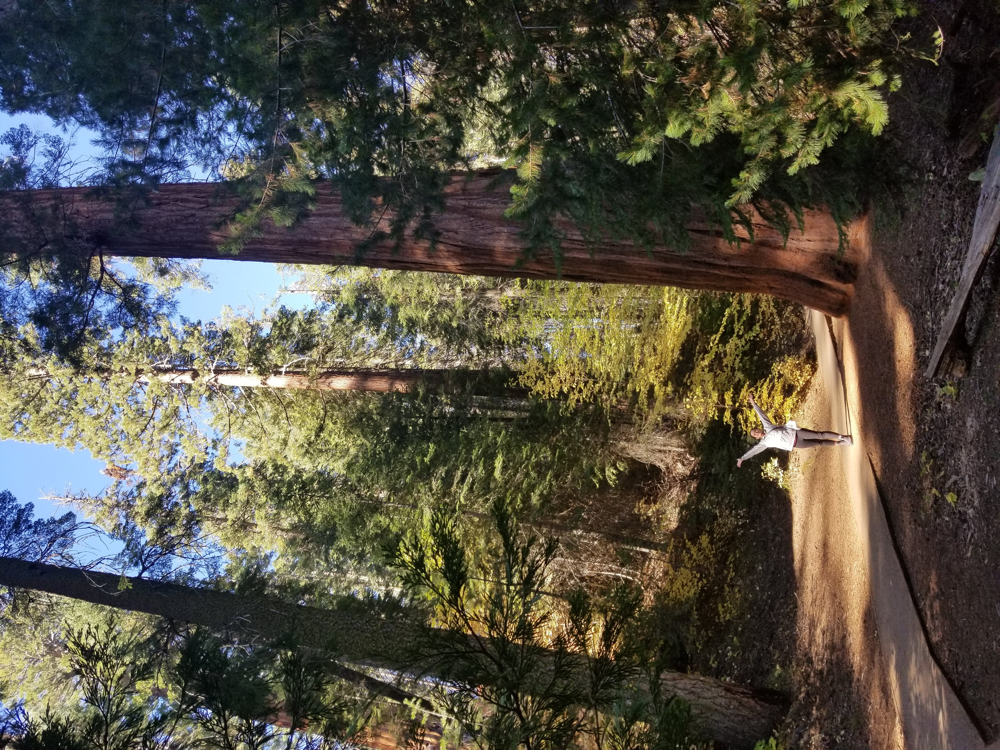

I help product teams ask better questions, uncover what really matters, and build the confidence to commit to a direction — with empathy and evidence in equal measure.

About me
I'm an empathetic and adaptable senior UX researcher with extensive experience across enterprise, financial services, and consumer-facing products. I apply a broad range of research methodologies to surface actionable insights that drive user-centered product decisions — and translate complex qualitative data into clear, strategic recommendations for various levels of leadership and cross-functional stakeholders.
I think of research as wayfinding. My work is about making sure insights actually shape decisions, and building a team's capacity to think like researchers. Whether I'm breaking down silos, reframing a stakeholder's question, or mentoring a junior analyst, I focus on creating clarity that moves things forward.

My philosophy
"Research is wayfinding. You need curiosity to explore the right questions, and compassion to understand what really matters."
I focus on creating clarity that moves us forward — with empathy and evidence in equal measure. Whether I'm helping designers reframe their questions, facilitating cross-functional workshops, or breaking down silos so research isn't a black box, my goal is always the same: make insights impossible to ignore.
Case studies
Each case study is password protected. Request access when we connect.
Turning an unfocused ask into a strategic, sequenced research program
Stakeholders came with prototypes and excitement but no clear research direction. The initial ask was broad enough to paralyze — and specific enough to mislead. I needed to reshape the problem before we could study it.
Designing a bespoke methodology when the textbook answer wasn't on the table
Eight designers each created two versions of a platform redesign. I had two weeks, 16 designs to evaluate, no robust survey platform, and a mandate to find a clear winner aligned to locked brand attributes.
Experience
Skills & tools
Get in touch
I'm always open to conversations about research, collaboration, or new opportunities. Don't hesitate to reach out.